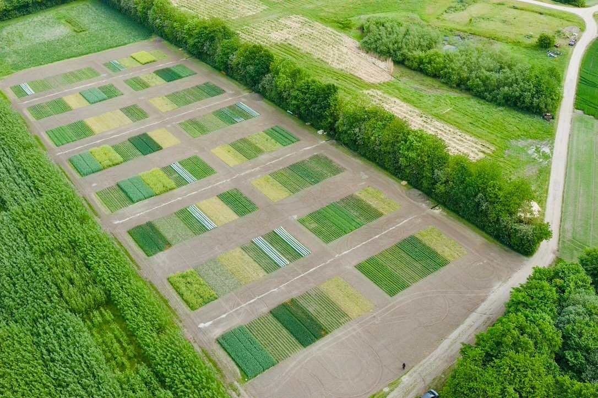

PerennialSystems
Establishment of a long-term trial for comparison of perennial and annual grain systems
In the pursuit of urgent sustainable intensification, modern agriculture faces the challenge of transitioning to climate-friendly, diversified, and resource-efficient systems for food, feed, and energy production.
Perennial grain crops are emerging as a promising solution, as they require fewer inputs and possess deep-rooted systems, making them more sustainable.
This project aims to advance our understanding of agronomic practices for perennial grain crops and their potential multipurpose applications in comparison to annual cropping systems.
